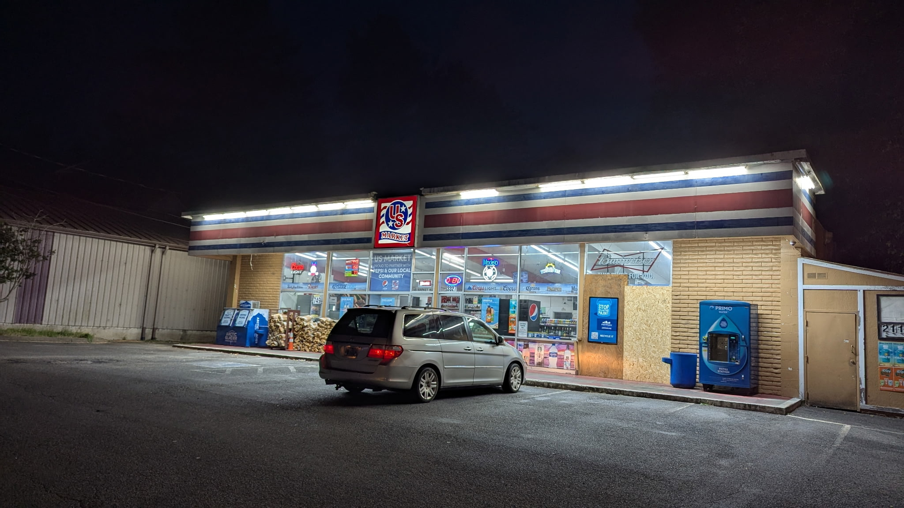

'Twas the Night Before Christmas
And all through the house there isn't any eggnog to be found and all of the grocery stores are closed so I have to go to a gas station to pick some of the darned stuff up so my crazy uncle can continue his spiked eggnog bender, the old lazy drunk.

I pull into the gas station, go inside, and see a guy with, no kidding, one crutch and the bottom half of his leg not in a cast but with some kind of small-scale building scaffolding type thing going on where it looks like there are some pins. He's in the cold drinks section grabbing for something and as I get closer I see it's the last container of eggnog. I ask nicely, in the holiday spirit and all, if he could see his way to letting me have the last bottle of eggnog as it's very important to my dear sweet uncle and the guy just smirks and starts hobbling away from me so I clip him in his bad leg and as he shouts yuletides at me from the slushy sticky cigarette stained floor I grab the last container of eggnog out of his clutching mittened hands and run up to the counter where I pause as the lady running the register looks at me all shocked. I give her a sweet holiday smile as she runs my credit card and as she hands me the receipt I say "God bless us...everyone".